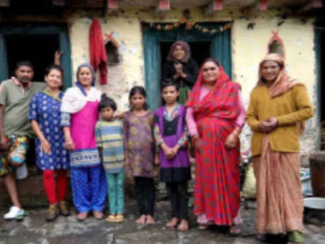

Se sabe que 'El Taj' es una de las maravillas del mundo y es uno de los sitios del Patrimonio Mundial de la UNESCO. ¡Uno conoce el Taj como una leyenda del amor eterno de un Emperador por su Reina favorita!
El Taj Mahal es un mausoleo de arquitectura mogola, construida entre 1631 y 1654, para la esposa del gobernante mogol Shah Jahan, Mumtaz Mahal (quien murió durante un parto en 1631). Antes de fallecer, Mumtaz pidió tres cosas a su marido:
- Que no se volviera a casar
- Que no tuviera más hijos
- Que construyera en su honor el mayor mausoleo de la tierra donde pudiera recordarla.
¿Por qué visitar India?
India es magia, trasmite serenidad, conexión con la vida, espiritualidad, sencillez y amor..Los indios te regalan una sonrisa sin importar sus condiciones, son seres que se alegran de ver turistas en su país, desconocen la palabra “discriminación” o “xenofobia”, seres que sin saberlo te dan una hermosa cátedra de vida, lo suficiente para amar a este país. Una cosa asombrosa es que en India la cultura y las tradiciones cambian con estados e incluso con ciudades y aldeas. Si usted está en el norte de la India, por ejemplo, Rajasthan, encontrarás hombres con turbantes de colores y las mujeres que llevan un estilo particular de ropa. En cambio, si se muda al sur de la India el estilo de vestir y el lenguaje será absolutamente diferente. La India tiene 22 idiomas oficiales, pero la gente habla 1652 idiomas.
La religión y la espiritualidad están intrincadamente entrelazadas con la vida cotidiana. La India es el hogar de todas las principales religiones del mundo y es el lugar de nacimiento del hinduismo, el budismo, el jainismo y el sijismo. Muchas personas también vienen a la India para encontrar espiritualidad, practicar yoga o asistir a un retiro de meditación en un Ashram.
Este país tiene templos increíbles como el Taj Mahal, el más importante y representativo de este país. El mausoleo es un templo grandísimo, imponente, impecable, con un diseño y acabado perfecto, envuelto en una historia de amor maravillosa. Es mágica, porque en ella te das cuenta que el ser humano sufre teniéndolo todo para ser feliz. En la actualidad hay 32 sitios de la UNESCO declarados Patrimonio de la Humanidad en toda la nación, haciendo de India un tesoro para los aficionados a la historia y los entusiastas del diseño.
Ofertas semanales
Somos expertos en encontrar excursiones en oferta. ¿Sabías que registrarse es gratis y no lleva más que un click?
Visa y Embajada
Para viajar a India y sentir la amabilidad de su gente y la oferta cultural de ciudades como Nueva Delhi y Uttar Pradesh, consulta con anterioridad los requisitos de ingreso al país.
Seguinos
¡Seguinos en las redes para enterarte novedades, ofertas de actividades y tips de viajes!